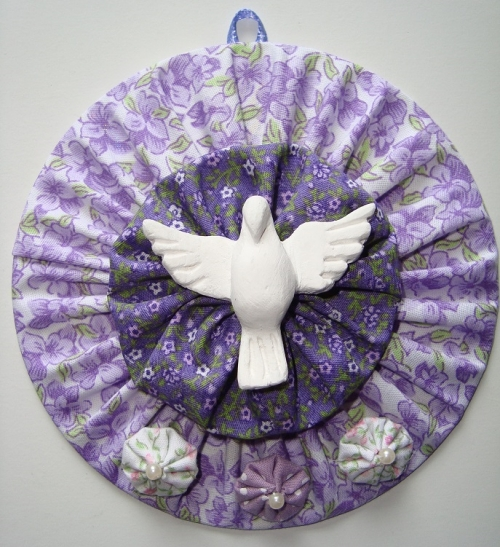
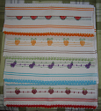
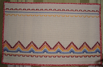
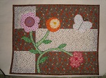
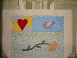
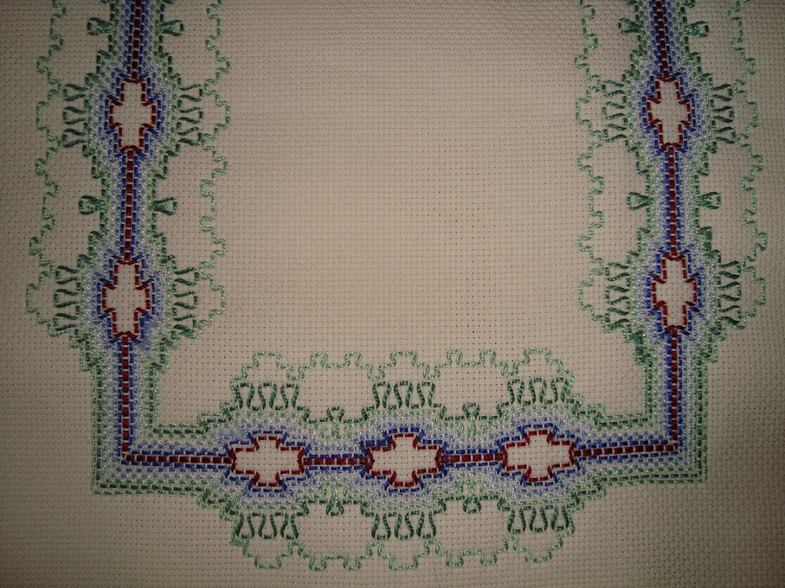

Sobre

Olá! Bem-vindos a minha página!
Me chamo Doralice e moro na cidade de Niterói - RJ. Professora aposentada, sempre fui habilidosa em artes manuais e descobri que essa habilidade poderia ser mais que um hobbie e passei a expor meus trabalhos.
Iniciei na feira de artesanato da escola Júlia Cortines, e atualmente exponho na feira do Campo de São Bento nos finais de semana. Meus principais trabalhos são o patchwork e o vagonite.
Fotos
- 
- 
- 
- 

- 
Localização
Feira de Artesanato Campo de São Bento - Icaraí - Niterói - RJ
Barraca 267
Próximo ao portão da Avenida Roberto Silveira
Aos sábados e domingos, de 9 às 14 hrs
Contato
doralice.carvalho@gmail.com
(21)99178-3398